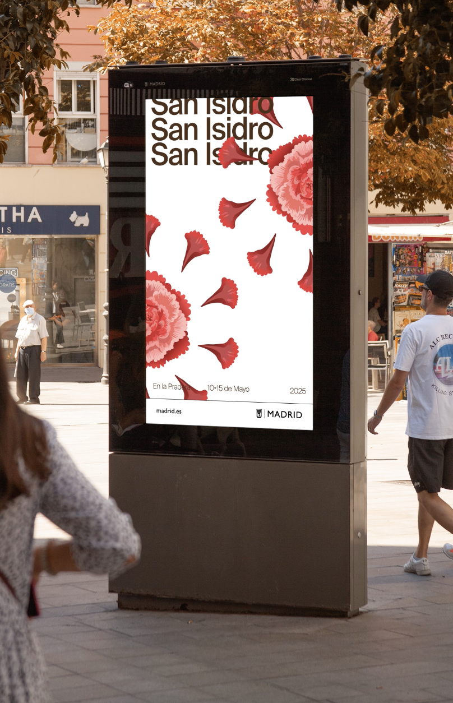
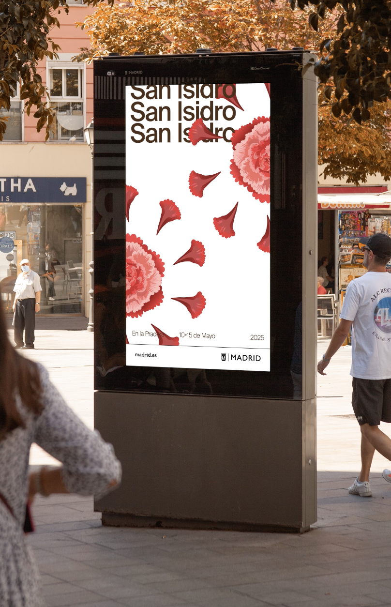
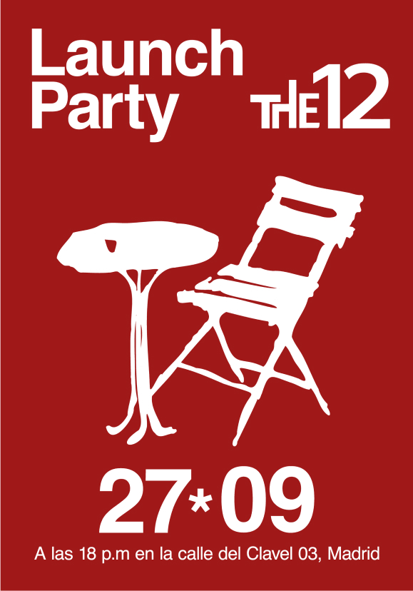
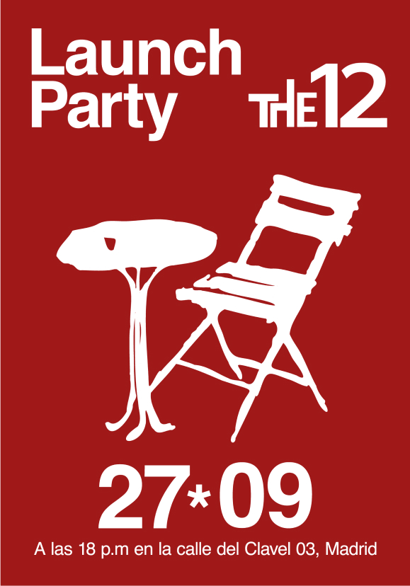

Colección cápsula Calima x Zara
Branding, Dirección de arte, Packaging
El corazón de la artesanía mediterránea
Colección cápsula inspirada en la artesanía y tradiciones mediterráneas. Para ello nos inspiramos en la Toscana y nos aliamos con sus más famosos artesanos para crear piezas únicas. Buscamos comunicar la sofisticación de la Toscana, con raíces en sus tradiciones italianas, mediante un diseño limpio, puro, elegante y artesanal.
Concepto: poner en valor los valores y tradiciones mediterráneos


Campaña para San Isidro
Diseño gráfico, Dirección de arte
San Isidro, Madrid al ritmo del Chotis
Para crear el sistema gráfico para la campaña del Ayuntamiento de Madrid de San Isidro, me he querido inspirar en el Chotis Madrileño. Este baile es en pareja y se baila al son de un organillo. Durante el baile la mujer gira alrededor del hombre, que a su vez va girando sobre su propio eje.
Concepto: un sistema gráfico que represente ese movimiento, representadolo con claveles y tanto con el fruto el madroño, como con sus hojas.
 

Coworking The 12th
Diseño gráfico, Dirección de arte
Siéntate como en casa
Exploramos el concepto de sentirse como en casa, transformándolo en “sentarse como en casa”, demostrando nuestro carácter creativo e intentando reflejar ese confort y comodidad de nuestros espacios. Esto está acompañado por el uso reiterado de las sillas como recurso gráfico
Concepto: la constancia, la cooperación y la pasión, así como el descanso y el bienestar.

 
